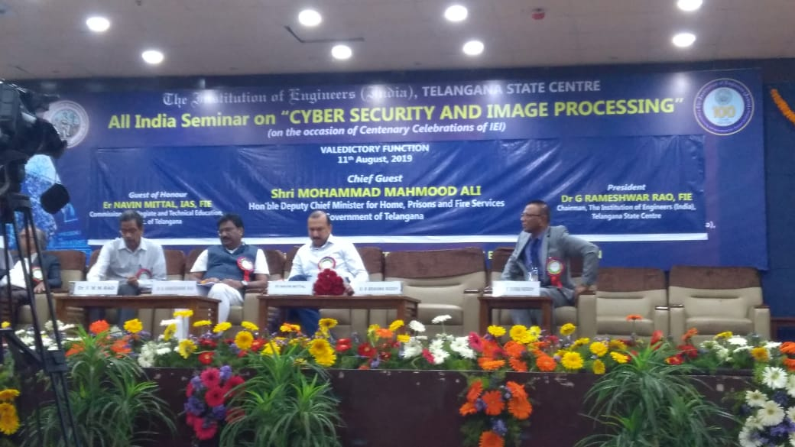
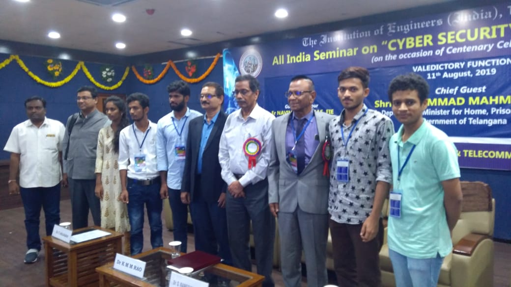
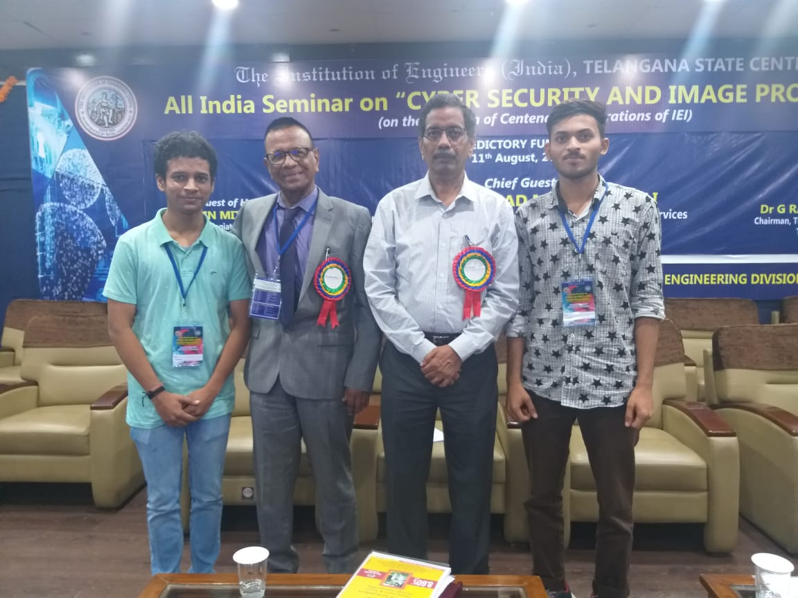
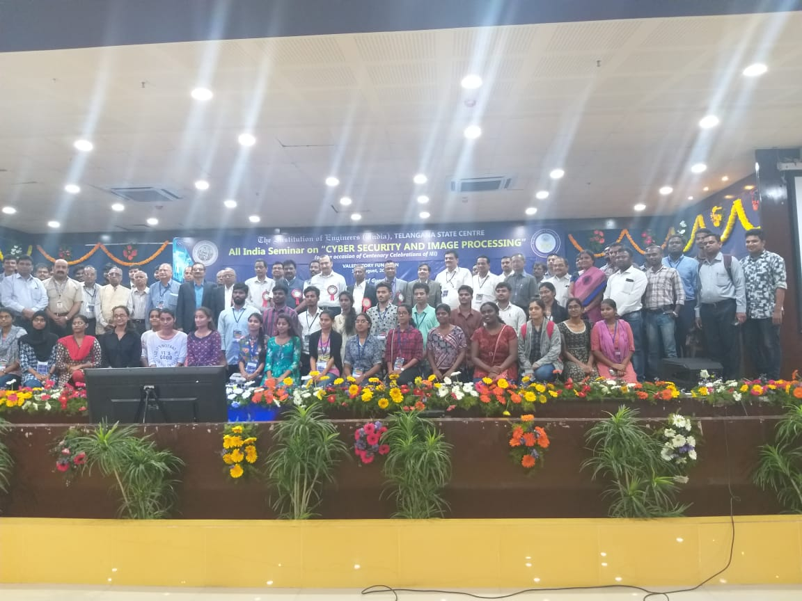

The Institute of Engineers (India), Telangana State Centre has organised a two day All India Seminar on ‘Cyber Security and Image Processing” on 10th and 11th August. The event was inaugurated by our Hon’ble Union Minister of State for Home Affairs, Govt. of India, Shri G. Kishan Reddy and the Guest-of-Honour for the seminar was Commissioner of Police, Hyderabad City, Govt. of Telangana, Shri Anjani kumar, IPS. The inaugural started with National Song VANDEMATARAM and a Welcome speech by Dr. G. Rameshwar Rao, FIE, Chairman Institute of Engineers India (IEI), TSC. Dr. K.M.M. Rao, Chairman, Technical Committee, Senior Member and Former Director ISRO Hyderabad described about the Seminar. Later, Dr. B. Sriram, Chief Executive Officer, Cyber Security Centre for Excellence, DSCI, New Delhi addressed the key note which was followed by a short address by Guest-of-Honour about the importance of and need of cyber security by sharing an incident which happened in Newyork in which a famous business tycoon died suddenly due to poisoning, this happened because of the diabetes pump which was implanted in the victim's body was hacked and made to release overdose than required, during his speech Anjani Sir gave an assertion that "Everything that is connected to the internet can be hacked", so one must be aware while surfing the net. Subsequently, Union Minister G Kishan Reddy Sir said safety and security of the citizens is the top priority of the Central government. Also he added cyber technology is being used in border safety in many areas as we cannot deploy personnel to keep a vigil in the areas like hills and rivers. Central government is also looking forward to expand cyber security at all border lines. Kishan Reddy congratulated the Warangal police for their efforts in delivering light-speed justice in the case of nine-month-old infant rape case. Also Read - CM KCR, Nagari MLA Roja offers prayers at Athi Varadar temple in Kanchi Advertise with us Warangal Police has used technology like CCTV footages to acquire evidence. Prime Minister Narendra Modi always advises us to be careful while speaking with others even though they might be friends, as there is a chance of recording while you speak. The increased technology is both a boon and bane, so one must know to what extent we have to use technology, he said. Commissioner Anjani Kumar said our society has moved from cycle patrolling to cyber patrol. Cyber security helps police in detecting crime in short span of time and nab the offender. MLC and BJP leader N Ramchander Rao, while speaking on the occasion said that once in the past even, he was a victim of cyber offence in which he lost Rs 34,000 from his bank. Science made human life pleasurable and miserable, he added. Kishan Reddy urged the cyber experts who attended the seminar to present a report and positive suggestions to the central government, so the government could be able to improve its developmental activities in the cyber security.The inaugural ceremony ended by a Vote of Thanks by Er T Anjaiah, FIE Hon. Secretary, IEI, TSC followed by National Anthem JANA GANA MANA.

After the inaugural ceremony around 20 invited speakers from gamut of areas like space, defence , banking technology, IT Police , Cyber Security, Industry and Universities have delivered invited talks. On the whole all the speakers, provided a common platform for experts to discuss and deliberate on the issues related to topics like Image processing for cyber Security, Image and video transmission , Steganography, Visual Cryptography, Cyber Security and more.
Comprehensively the seminar gave a knowledge, that visual cryptography involves the segmentation of information into mutually exclusive and individually random looking components and sending them over different paths . The advantage is, if even one of the transmission is intercepted it cannot reveal any information. This is especially important because it is feared that with the advent of Quantum Computing and computational complexity alone cannot provide security. Hence it is important to ensure that the database is not tampered.
The seminar enabled concerned engineers and scientists and the budding engineers to gain knowledge on various aspects of the Electronics Industry in general and new economic options available for practical implementation at all levels in the fields of Cyber Security, Image Processing and Internet of Hidden Things(TOR Implementation in IoT) also after every talk 10 to 15 mins was given to discuss about the information given in the talk where doubts were also clarified by speakers understandably.
Some of the major projects demonstrated in the project expo includes:
The valedictory was held on August 11 which was graced by Er Navin Mittal, IAS, FIE, Commissioner Collegiate and Technical Education Govt. of Telangana as Chief Guest. The valedictory started with National Song VANDEMATARAM and a Welcome Address by Er T Anjaiah, FIE, Hon. Secretary, IEI, TSC followed by Opening remarks by Dr G Rameshwar Rao, FIE, Chairman, IEI, TSC. Dr. K.M.M. Rao, Former Deputy Director, ISRO Hyderabad presented the recommendations. Later there was talk by Chief Guest Er Navin Mittal, IAS. The valedictory session ended by a Vote of Thanks by Er B Brahma Reddy, FIE Council Member , IEI & Co-Chairman, Organizing Committee followed by National Anthem JANA GANA MANA.
   